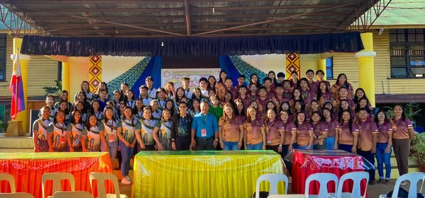

School News
How we wish it is extended to 6… But yes, tomorrow January 2, 2025 classes resumes as stipulated in our DepEd Calendar!
Happy New Year spotless jewels! ✨
#HNY2025
#HomeOfTheSpotlessJewels
Wednesday, January 1, 2025 at 9:17PM

Happy New Year to the spotless jewels! 💎✨
†††††††As we step into this bright new year, we are reminded of the core values that guide our journey: Scholarship, Leadership, and Character. These pillars stand strong in everything we do, shaping our students into individuals who not only excel academically but also inspire others with their leadership and lead lives rooted in integrity and respect.
†††††††May 2025 be a year of growth and achievement for all. Together, let’s continue to strive for excellence, embrace challenges with resilience, and uplift each other through kindness and respect. Here’s to a year filled with learning, growth, and success!
Wishing you all a prosperous, fulfilling, and inspiring 2025!
Tuesday, December 31, 2024 at 3:23PM

Happy Feast Day of the Immaculate Conception of Mary! 🌟 A celebration of grace, purity, and unwavering faith. May her intercession bring peace and blessings to all. 🙏
Sunday, December 8, 2024 at 8:43PM
2024 MUNICIPAL SCHOOLS PRESS CONFERENCE
Spotless Jewels student journalists and coaches in full circle with our supportive Secondary School Principal II, Teodoro P. Casiano.
We pray for guidance, wisdom and sustained energy to all the participants! Shine spotless jewels, shine! ✨💎
Thursday, December 5, 2024 at 7:48AM

Congratulations Grade 11 Senior High School 21st Century Literature Classes for the success of your LIT. ERA. TURE Culminating Activity.
We celebrate not just an achievement but a collective triumph—a testament to what we can accomplish when our young people take the lead. It is with immense pride that we recognize the invaluable contributions of our students to the initiatives that have brought meaningful hands on experience to the spotless jewels unlocking the target competencies and beyond as stipulated in DepEd’s learning competencies!
Thank you Sir Leo I. Tan III, the brainchild of the activity since 2016 together with the subject teachers Jeson Villafranca, Roland San Juan, Maria Luz Balucan and Mara Dalapo together with the literature students that poured out their efforts in realizing the event.
Thank you as well to the all out support of Sir Teodoro P. Casiano in supporting meaningful learning activities beyond the four cornerstones of the classrooms and for the usual reminders on safety, cleanliness and collaborative efforts in ensuring successful implementation of the programs.
We also acknowledge the full support of the parents of the Senior High School students which has become an adding fuel to students success and participation.
Here’s a look back to an unforgettable friday at their literary exhibit and food bazaar Culmination, where creativity met culinary delights! From vibrant art displays, to mouthwatering dishes.
Reliving these moments reminds us how special it is to come together and celebrate talents, culture, and the shared joy of unforgettable moments!
#SHSLITERATURECulmination
#ReadingMonthCeleration2024
#SHSWay
#HomeOfTheSpotlessJewels
Sunday, November 24, 2024 at 3:29PM
𝗟𝗔𝗧𝗛𝗔𝗟𝗔𝗜𝗡 | 𝗣𝗮𝗴𝗽𝘂𝗽𝘂𝗴𝗮𝘆 𝗸𝗮𝘆 𝗦𝗶𝗿 ğ— ğ—²ğ—¼ğ—»ğ—´
“ğ™‰ğ™¤ ğ™¤ğ™£ğ™š ğ™˜ğ™–𙣠ğ™§ğ™šğ™¥ğ™¡ğ™–ğ™˜ğ™š ğ™¨ğ™ğ™§ ğ˜¼ğ™¡ğ™¡ğ™šğ™©ğ™¤.â€
Sa mundong puno ng ingay at kulay, maraming bagay ang naghihintay, iba-iba ang nakaantabay, walang nakakaalam sa kung ano ang takbo ng buhay na binabaybay. Sa daang tinatahak marami tayong nakikilala na siya ring lumilisan. Kaya naman, kakaibang bigat ang dinadala ng balitang hindi inaasahan ng lahat.
Mabigat na hangin ang pumapalibot sa paaralang Manolo Fortich National High School habang niyayakap ng kalungkutan ang mga guro at mag-aaral na naiwanan ng bakas ni Sir Romeo “Meong†Alleto. Bawat sulok ng paaralan, pangalan niya ang pinag-uusapan, binibigkas ang kaniyang natatanging pagkakakilanlan. Guro na kilala sa malaki nitong ngiti at puso—handang maglingkod at sumaklolo.
“Grabe ka buotan, grabe ka gentleman, ug kaloveable. Friendly, smiling, and buhaton niya iyang best nga mainspire niya ang iyang mga gatudluan. Grabe siya nga maestro ug sakit nga nawala siya,†pagbabahagi ni Mhon Vhinz Somooy, kabilang sa MFNHS Boy Scout of the Philippines (BSP). “He had a special presence—calm and strong—and he always lifted everyone up. He knew how to be a coach, a mentor, and a friend all at once. We’ll always remember him, and the impact he had on us will last a long time. He helped shape us into who we are today, encouraged us to push ourselves, and taught us to believe in ourselves. Even though he’s no longer with us, the lessons he taught us will stay with us; and thankful kaayo mi for the time we had with him, even if it was too short lang. He was a true inspiration, and we’ll carry on his legacy in everything we do,†dagdag pa ni Sofia Aldeguer, miyembro rin ng MFNHS BSP at manlalaro ng taekwondo na dinadala ni Sir Meong. Siya ay guro na tunay na nagbibigay ng inspirasyon sa bawat mag-aaral na kanyang kinakalinga.
“He’s a real friend, very smiling, kind, and he’s very generous, he’s very loving, and caring,†bigkas naman ni G. Amadeo D. Moreno, kaibigang guro ni Sir Meong. “As a close friend, nasayangan ko nga nawala siya, tungod sa iyang mga virtues nga maayo sa mga kauban niya nga teachers,†pagpapatuloy naman nito. Mabigat mang tanggapin para sa mga guro, mag-iiwan ng bakas ang moral at kabutihan ni sir Meong.
“Dili siya mureklamo, dili mu-no. Iyang way of love is overflowing, we submerged with beautiful words sa iyaha. Sa mga bata nga nareceive niya diha sa clinic, maayo ang feedback, pangutan-on niya kung nakakaon na ba, mangutana siya kung makaya na ba nila maglakaw, wala siyay gabuy-an dira nga dili okay, emotionally, psychologically, mentally, and physically. Dako gyud kaayo ang iyang pagtabang sa mga bata. Seryoso sa iyang trabaho, with care, with love, with the at most time, iyaha gyung ihatag sa iyang work. He is a teacher and a nurse; ako mutake the risk, si sir Alleto mutake care. Maappreciate nato iyang presence diri sa school, as a second parent, some as a father. Ingana ta ka fortunate nga nakasulod siya sa atong life. No one can replace Sir Alleto, no one can replace. He was a hero diri sa school,†pagbabahagi rin ni G. Ronel E. Alemania. Mga salitang nagpapakita ng malaking dulot ni Sir Alleto sa mga taong binigyan nito ng pagmamahal. Malinaw ang busilak na puso ng guro at ang pagmamalasakit sa nangangailangan ng tulong at pagkalinga.
Sa patuloy nating paglalakbay at pagkilala ng mga tao sa ating binabaybay, nawa’y nakaukit sa ating puso’t isipan ang kaniyang katauhan. Si Sir Meong bilang, guro, nurse, at isang father figure na naging inspirasyon at bayani na bukal na naglingkod para sa mga mag-aaral, guro at kapwa. Itatak natin sa ating mga isipan, ang moral at kabutihan na iniwan niya sa ating paaralan at kalooban.
Malaking pasasalamat ng buong institusyon na siya ay naging parte ng ating buhay upang mag-iwan ng bakas at alaala. Huminga tayong lahat nang malalim, at tanawing muli ang malaking mga ngiti ng nag-iisa nating Sir Meong.
Rest in peace, Sir Romeo “Meong†Alleto. You will always be remembered and loved. 🕊🌹
𝗜𝘀𝗶𝗻𝘂𝗹𝗮𝘁 𝗻𝗶 Rochelle Ann G. Yangular
𝗜𝗴𝗶𝗻𝘂𝗵𝗶𝘁 𝗻𝗶 Ashleigh M. Pantonial
Thursday, November21, 2024 at 9:39PM